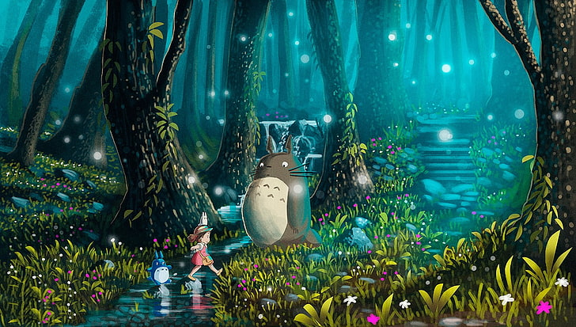

En diciembre de 2018 saltó la noticia de que Studio Ghibli abriría, en otoño de 2022, Ghibli Park, un parque temático dedicado al mundo de la animación de Ghibli. Ghibli Park, inicialmente llamado Ghibli Studio Park, se está construyendo en el interior del Parque conmemorativo de la Expo de Aichi, a las afueras de Nagoya. Se ha usado este enclave porque en este parque es donde ya se encuentra la reproducción a escala real de La casa de Satsuki y Mei de la película Mi vecino Totoro.
También se sabe que el famoso director Hayao Miyazaki está muy involucrado en el diseño del parque. Y eso es sello de calidad, porque Miyazaki es el artífice de maravillas de la animación como Mi vecino Totoro o El viaje de Chihiro, por ejemplo.
Ver en YouTube